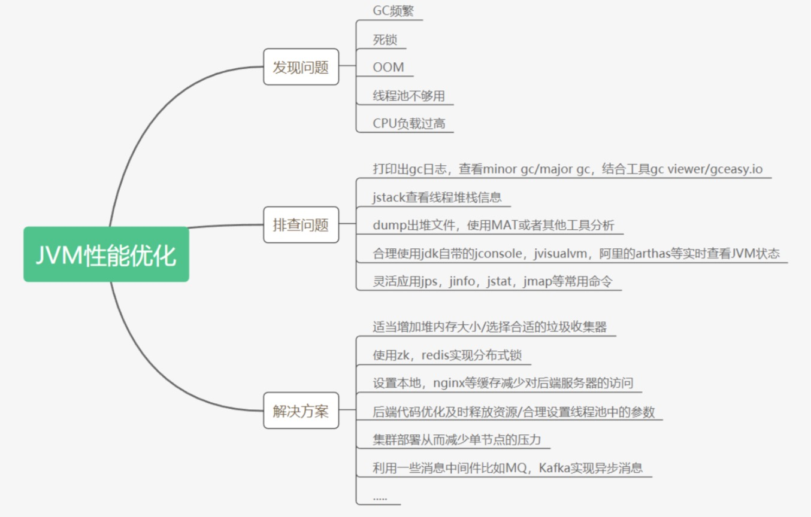

内存
内存泄漏
不再使用的对象无法得到及时的回收，持续占用内存空间，从而造成内存空间的浪费。内存泄漏很容易导致内存溢出，但内存溢出不一定是内存泄漏导致的。
内存溢出
一般两个原因：
内存泄漏
通常是代码原因。
高并发
可以通过浏览器缓存、CDN静态资源服务器、动静分离、应用缓存、限流、Tomcat优化、异步中间件、分布式锁等来缓解。
CPU
top -Hp PID
查看进程中占用CPU高的线程id，即下面所需的TID
jstack PID | grep TID
查看tid的堆栈信息
GC
尽量让对象在新生代就被回收，防止过多的对象晋升到老年代，减少大对象的分配
平衡垃圾回收的次数（吞吐量）和停顿时间两个指标
对象年龄晋升的阈值等参数
如何调优
dump出堆文件，用mat分析
打印gc.log，用gcviewer分析
